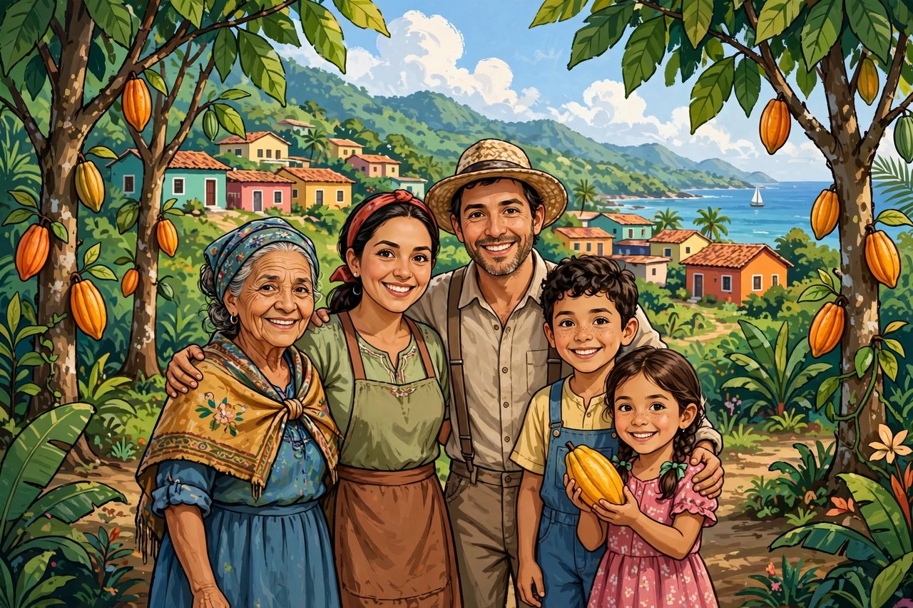

Dein Rucksack
Der ganze Wald auf deinem Bildschirm
Magst du den Wald ohne Browserleisten erleben? Tippe in Safari unten auf Teilen und dann auf „Zum Home-Bildschirm“. Von dort öffnet sich die Kakao-Reise wie eine App – über den ganzen Bildschirm.
Mit zwei Fingern kannst du in den Wald hinein- und wieder herauszoomen.

·
Wissensbuch
lädt dich ein auf die
Ein Lernspiel mit dem Kakao von Maya Munay · Entwurf, nicht veröffentlicht · Version 92 · WebGL
